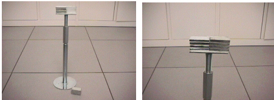
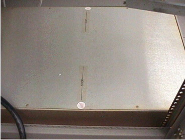
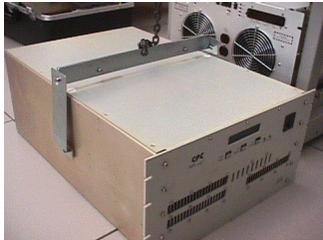

Operating Documentation
Direction 5440000, Rev# 5
Signa HDxt Service Methods
Module Version 2.0, Version Date 11/7/08
Operating Documentation |
| Required Persons | Preliminary Reqs | Procedure | Finalization |
|---|---|---|---|
| 2 | Not Applicable | 1 hour | 2 hours |
This section describes how to replace the CPC MNS Amplifier located in the 3.0T RF Accessories Cabinet.
| Item | Qty | Effectivity | Part# | Manufacturer | |
|---|---|---|---|---|---|
| Universal Lift Hoist Kit with ACGD Attachments | 1 | - | 46-317266G6 | - | |
| Standard Hand Tools | 1 | - | - | - | |
| ||||
| FATAL ELECTRIC SHOCK HAZARD!! | ||||
| Fatal voltages throughout the cabinet when entergized. | ||||
| TO PREVENT FATAL ELECTRIC SHOCK, DISCONNECT POWER FROM THE PDU BEFORE YOU PERFORM THE FOLLOWING PROCEDURES. PERFORM LOCKOUT / TAGOUT PROCEDURE PER GE OSHA LOCKOUT / TAGOUT REQUIREMENTS LISTED IN THE FIELD SERVICE EHS MANUAL & TRAINING 2000 P/N 2135387-200. |
| ||||
| Heavy Component. | ||||
| The CPC Amplifier is heavy and will need a significant amount of balancing to remove it from the RF Accessories Cabinet. | ||||
| Two individuals should perform this procedure. |
| ||||
| Prior to powering down the entire Systems Cabinet, boot Applications software down to Root level. The VRE System which resides in the Systems Cabinet can become corrupted if it loses power when Applications software is active. | ||||
Boot applications software down to root level by right clicking the mouse, select Service Tools and then select System Restart. Once the GUI login appears proceed to the LOTO step, Step 2.
Remove power, refer to the Lockout / Tagout RF Systems Cabinet and RF Amplifier
Remove the Front Cover from the 3.0T RF accessories Cabinet.
Remove the Screws holding the CPC MNS Amplifier to the Front Rails.
Remove the Cables from the back of the CPC MNS Amplifier.
Assemble the Universal Hoist Rail and attach it to the 3.0T Accessories Cabinet. See Illustration 1
Illustration 1: Hoist Assembled And Installed

Assemble the Kick Stand. See Illustration 2
Illustration 2: KICK STAND ASSEMBLY

Install the Kick Stand in Front of the amplifier. See Illustration 3
Illustration 3: KICK STAND IN PLACE

Pull the Amplifier out of the front of the 3.0T Accessories Cabinet to the mark that indicates where to stop. See Illustration 4
Illustration 4: CENTER LINE OF AMP

Find and attach the brackets that will best fit to the side of the CPC Amplifier.
Attach the Hoist Spreader bar. See Illustration 5
Illustration 5: BRACKETS AND SPREADER BAR ATTACHED

Lift the Amplifier and ease it out on to the Kick Stand. See Illustration 6
Illustration 6: KICK STAND IN PLACE
Lift the amp slightly while holding it to prevent swinging.
Remove the Kick Stand and Drop the amplifier to the Floor. See Illustration 7
Illustration 7: PLACE AMP ON THE FLOOR

Slide it out of the way.
Using the hoist and additional FE Help, lift the Replacement amplifier from its shipping box and place it on the floor in front of the 3.0T Accessories Cabinet.
Attach the Brackets.
Attach the Spreader Bar. See Illustration 8
Illustration 8: INSTALL BRACKETS AND SPREADER BAR ON REPLACEMENT AMP

While one FE stabilizes the Amplifier use the hoist to lift it into place. See Illustration 9
Illustration 9: HOIST INTO POSITION

Insert the Amplifier as far as possible in the cabinet.
20. Place the Kick Stand under the amplifier. See Illustration 10
Illustration 10: KICK STAND IN PLACE
Remove the brackets and hoist from the amplifier.
Slide it into the 3.0T RF Accessories Cabinet.
Reinstall the Screws on the Front of the 3.0T RF Accessories cabinet that hold the Amp in place.
Reinstall all the Cables.